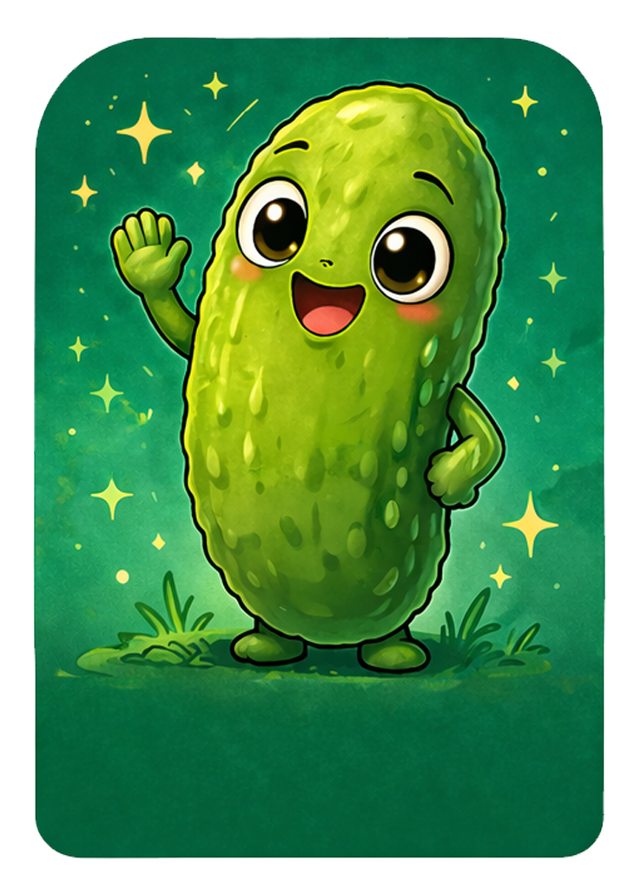

Chrome DevTools Message Logging Examples
Click each button, then open Chrome DevTools Console to see the message.
Browser Logged Message Examples
These buttons intentionally cause browser messages so we can view them in Chrome DevTools.
Filter Messages
This button creates several Console messages so I can practice filtering by log level, text, regular expression, message source, and user messages.
Sources Debugging Practice
This section creates a small bug that I can reproduce, inspect in the Sources UI, pause with a breakpoint, and debug using Chrome DevTools.
Expected result: the number plus 1.
Actual result: No result yet
Inspecting Values in DevTools
This section helps me check variable values, use the Scope Pane, add Watch Expressions, and test code in the Console while the debugger is paused.
Open DevTools, set a breakpoint in inspectVariableValues(),
then click this button.
Inspect result: No result yet
Apply a Fix
This section fixes the bug by converting the input value from text into a number before adding 1.
Expected result: the number plus 1.
Fixed result: No result yet